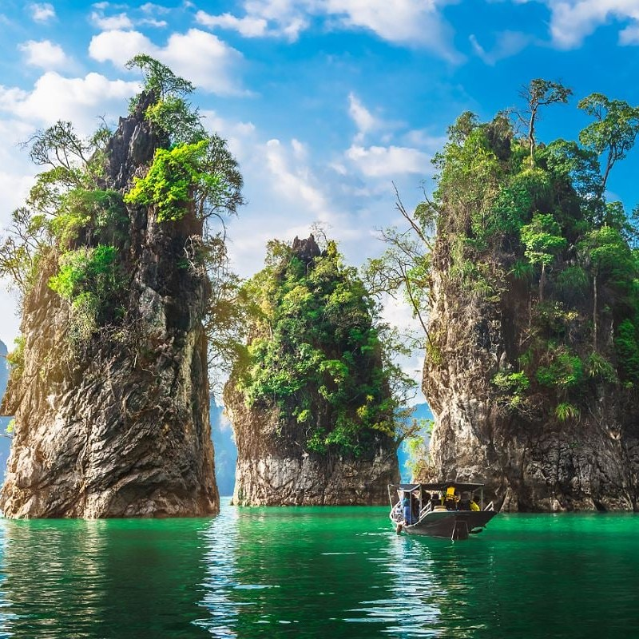
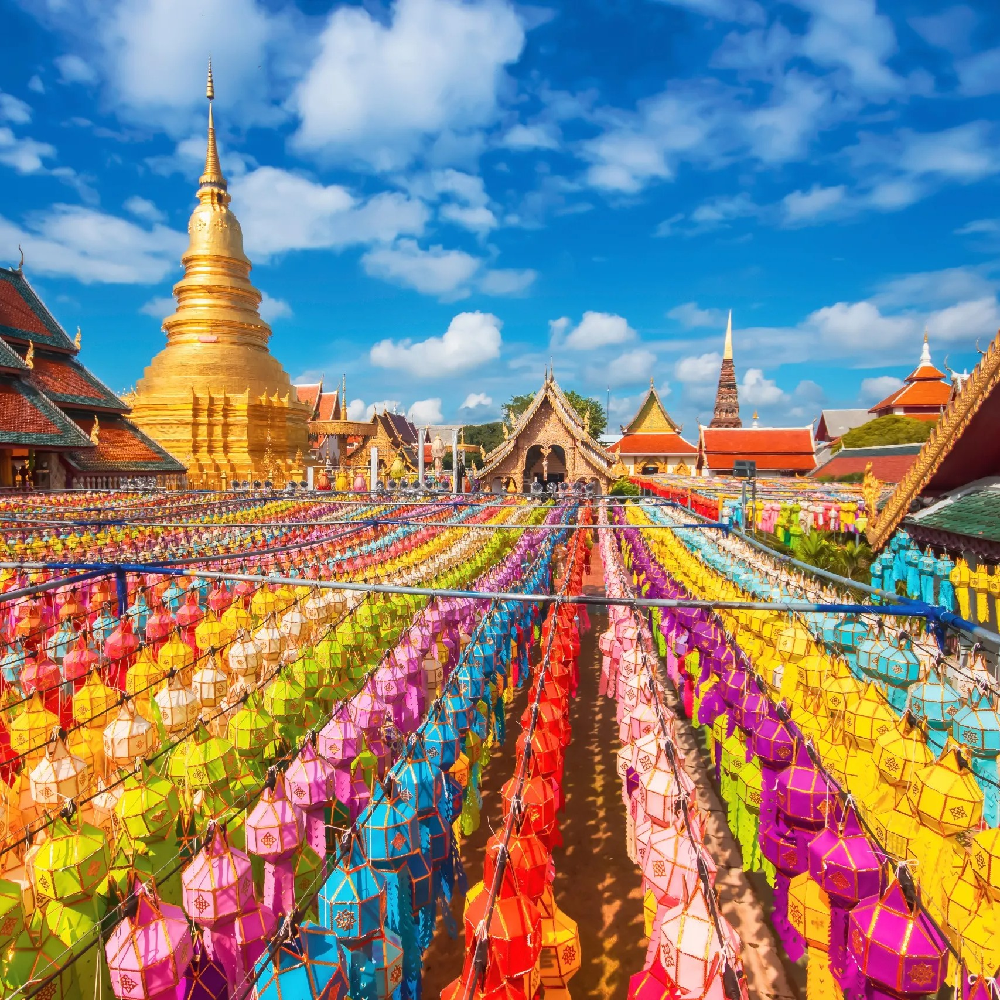

Thailand
From Bangkok's Grandeur to Chiang Mai's Serenity
My Thai adventure began in Bangkok, the vibrant capital city where modernity meets tradition. The bustling streets, ornate temples, and tantalizing street food stalls provided a kaleidoscope of sensory experiences. The contrast between the grandeur of the Grand Palace and the serenity of the Wat Pho temple complex left me in awe
 Venturing north to Chiang Mai, I embarked on an ethical elephant encounter at an elephant sanctuary. I had the privilege of getting up close with these majestic creatures, learning about their rehabilitation, and participating in activities that promoted their well-being. Bathing and feeding the elephants was a humbling and unforgettable experience.
Exploring Ayutthaya, Thailand's ancient capital, was like stepping back in time. The sprawling ruins of temples and palaces revealed the grandeur of a bygone era. Wat Chaiwatthanaram, with its exquisite architecture and reflection in the calm waters, stood as a testament to the historical richness of Ayutthaya.
Kanchanaburi, known for its lush landscapes and historical significance, offered two contrasting experiences. At Erawan National Park, I hiked through the jungle to reach the enchanting Erawan Waterfalls, where emerald pools beckoned for a refreshing swim. The cascading water and vibrant flora created a paradise for nature lovers. In contrast, I visited the Death Railway, a somber reminder of World War II's dark history. Walking along the railway tracks and crossing the Bridge on the River Kwai, I paid my respects to the countless lives lost during its construction.
 Heading south to Krabi, I explored the stunning Railay Beach, accessible only by boat due to its dramatic limestone cliffs. Rock climbing enthusiasts scaled the cliffs, adding to the adventurous atmosphere. I kayaked along the coastline, discovering hidden caves and pristine beaches. Island hopping in the Andaman Sea allowed me to visit Phi Phi Islands and snorkel among vibrant coral reefs teeming with marine life. The crystal-clear waters and picturesque landscapes made this a tropical paradise.
Phuket's Old Town was a delightful surprise, with its colorful Sino-Portuguese architecture and bustling markets. Strolling through the historic streets, I savored local dishes and explored the vibrant arts scene. On Phi Phi Islands, I hiked to the Phi Phi Viewpoint, where I was rewarded with panoramic vistas of the azure waters and the iconic twin bays of Phi Phi Leh. Watching the sunset from this vantage point was an ethereal experience.
Venturing into the mountains of Pai, I found a tranquil retreat far from the hustle and bustle of urban life. The Pai Canyon offered breathtaking views of the valley, and I trekked along narrow ridges to absorb the beauty of the surrounding landscapes. Exploring Pai's hot springs and visiting local markets provided insight into the serene, rural way of life.
As I reflect on my journey through Thailand, I am enchanted by the country's cultural depth, natural wonders, and the warmth of its people. From the grandeur of Bangkok to the serenity of Chiang Mai, the historical significance of Ayutthaya to the natural beauty of Kanchanaburi, the tropical paradise of Krabi to the vibrant scenes in Phuket, and the tranquil retreat of Pai, Thailand's allure lies in its multifaceted charm.
Join me in my future travels as I continue to explore the captivating regions of Asia and Oceania, each offering its own unique blend of beauty and cultural richness. Until next time, keep your wanderlust alive and your heart open to the wonders of the world. สวัสดีครับ!